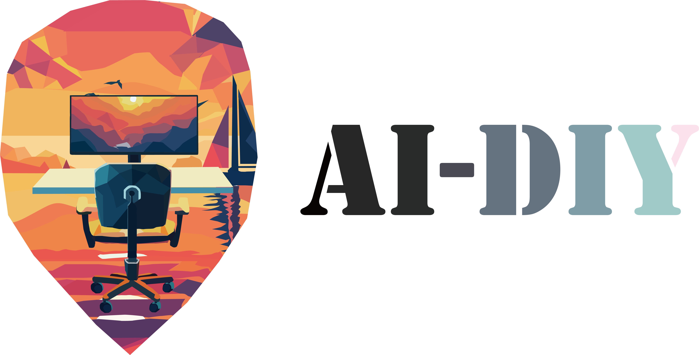

前言
The key is not how to learn, is how to learn fast.
本教程受到CS自学指南的启发。CS自学指南是一个全面而丰富的计算机领域的自学指南，提供了一系列供人学习的计算机领域的优质课程，本内容的静态网页创建也参考了其部分的配置。
本指南的内容不止在于如何学习，也在于如何更好的学习。
感谢@Axi404在写作中为内容提供的帮助。
为什么写这本书
从开始科研，直到第一篇论文的发表，笔者用时一年时间，这个时间说长不长，但是说短也不短，甚至对于诸多的读者来说，在学习生涯中的一年是无比宝贵的。要是从接触人工智能开始谈起，那么时间更是要向前推到两年之前。两年时间，一篇论文发表，在同龄人之间已经是傲人的成绩，但是伴随着领域内的内卷现状，这种担忧还是在不断地提升：对于新的初学者，如何更好更快的接触并了解人工智能领域的基础知识，并且快速开始自己的科研，拥有自己的科研成果发布，对于每一位读者来说，毫无疑问，是至关重要的。
回顾两年的自学生涯，出于专业的培养方案，课内的知识确实很难对科研相关的内容进行覆盖，因而在无人指导的情况下，笔者也走了不少的弯路。不少当初消磨了时间的知识，在如今已经极少提及，但是又常常成为初学者学习路上的绊脚之石。笔者常常思考，假如说自己在入门的时候，有一位好心的学长/学姐或者老师，可以给予自己一些帮助，那么会不会一切会变得不一样，但是遗憾的是，这种事情并没有发生在笔者的身上，可能也大概率不会发生在大多数读者的身上：一位负责任的领路人是一种幸运，但是出于机遇或者只是单纯羞于开口请教，大多数人并不会拥有这种幸运。
于是一个全面的、系统的并且饱含捷径的人工智能自学指南的诞生便具有其必要性了，这也是笔者写这一教程的初衷，希望后来人少走一些弯路，更好更快的掌握基础知识，投身于科研的实践之中，为大家带来这种有人领路的幸运。
这本书能为你带来什么
人工智能，随着Stable Diffusion以及ChatGPT的横空出世，广泛地出现在大众的视野中，而在此之前，人工智能领域已经取得了长足的发展。对于一名刚刚踏入大学的同学（或者对相关领域一无所知的新手）来说，人工智能只是一种浮于表象的热潮，但是无论出于什么原因（e.g. 科研/升学/就业/教职），你决定从一无所有开始踏足人工智能领域，开启这一次冒险。
当读者真正踏入人工智能领域之后，便不免发现其自学的困难性。人工智能的自学，其困难并非因为相关教程的稀缺，正相反，人工智能作为热门领域，其教程之数量浩如烟海，然而找到真正高效的途径却并不简单，无数的教程停留在人工智能早期的技术发展以及繁琐的数学推导，这些内容令初学者望而却步，而又使前进者付出了大量的时间成本。
从功利角度上来看，在如今科研环境越发内卷的当下（e.g. 本科保研，在大三之前在人工智能领域发表一篇CCF-A论文（也就是通常说的顶刊/会）已经成为了最高学府的入场券），一些人工智能内容的学习并不是必须的，尽快进入高速科研的赛道成为了一种必需品。
诚然一些基础的知识会提升你的科研品味，并且让你具有更好的insight（可以理解为见解），但是我们最后都会深耕于某一细分领域，对于相关领域的针对性学习与在此之前对于通识领域快速入手可以带来更高的回报率。
笔者在入门深度学习的过程中，走过了许多的弯路，并且总结了一些经验，这也是本教程写作的初衷：告诉读者如何自学人工智能，哪些教材/课程/视频可供参考或需要舍弃部分，如何提高自己的科研品味，如何快速入门某一领域等。
与此同时，本教程依然保持正常的教程功能，即在提供学习的快速通道的基础上，依然为想要按部就班/扎实学习人工智能领域相关知识的同学提供一条属于自己的道路。敬畏知识的人同样是可敬的，一条远路并非是一条歧路。
如何使用这本书
本书的全部内容均使用Markdown进行渲染，其中的部分格式是你需要注意的：
-
对于下划线内容，意味着当你学习这些内容的时候，并未走在最短路径上，但是笔者依然给出这些介绍与选项，因为远路不是歧路，扎实的知识同样可以为读者带来提升。
-
对于加粗内容，意味着这些内容或许是重点，
但也许仅来自作者随手的添加。
本教程具有诸多的受众，按照面向的层级进行递减。
- 本教程首先面对有志于人工智能领域的本科新生，事实上在如今的趋势下，本科新生已经有必要在第一时间接触科研，本教程写作之初也是为这一部分的学生设立的。
- 本教程其次面对有志于人工智能领域的本科生/研究生/直博生，这部分读者已经具备了数理基础，但是本文中关于入门机器学习/深度学习的部分依然具备参考价值。
- 本教程最后面向已经在AI领域中进行过研究并有志于改变科研方向的科研工作者，这部分读者已经了解了人工智能领域的全貌，但是对于全新的领域依然无从下手，本教程中会给出细分领域的介绍与建议，这或许是有帮助的。
本书的常识部分主要讲述了一些人工智能领域的常识，在正式学习人工智能领域之前，或许这些知识是你有必要了解的，包括课题组、论文以及一些领域中的专业词汇，我们建立了一个优雅的专业词汇对照表，并且会持续的进行更新，这或许对于你会有帮助。
本书的知识图谱部分主要讲述了如何学习某方面的知识的宏观学习方法，在这其中，我们指出了哪些知识是必须的，哪些知识是可选的，以及如何学习这些知识。对于已经经过系统学习的科研工作者来说，这一部分的知识或许并非必须的。
假如你也想成为贡献者
假如你也想成为贡献者，为后来之人指引一分方向，可以直接在项目中发起Pull Request，也欢迎和我邮件联系（2221110582@stu.xjtu.edu.cn）。